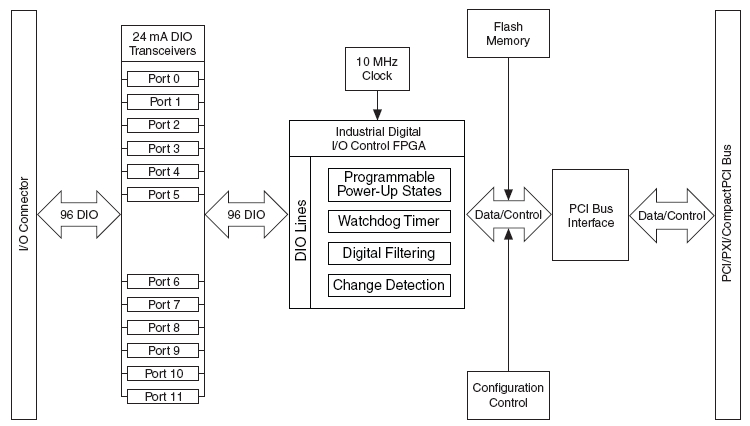

| Simpole® |
|
|
|---|
PCI6509 是NI公司以高驱动能力DIO为主要特征的多功能I/O板卡，包括96通道的双向DIO，其中每8个DIO通道组成一个8bit的端口，共12个端口。
具体内容如下：
PCI6509板卡提供了系统模型和外部设备之间的接口。PCI6509板卡具有12个数字I/O端口，每个端口有8个通道，共计96个双向双向的数字I/O通道，板卡架构图如图所示：
PCI6509提供了Digital I/O 单元。Digital I/O单元具有以下特征：
SimpoleD 提供了一个DIO的模块，该模块支持96个DIO通道，这些通道8个一组，组成一个8bit的端口，每个端口可便成为输入或输出。SimpoleD DIO模块与板卡上DIO端口之间的映射关系如下表所示。
PCI6509 DIO 端口和SimpoleD 端口I/O映射表
| 相关RTD模块 | RTD Group Number （动态配置DI或DO） | 板卡端口引脚 |
|---|---|---|
| PCI 6509 DIO | Group Number 1 | P0.0-P0.7 |
| Group Number 2 | P1.0-P1.7 | |
| Group Number 3 | P2.0-P2.7 | |
| Group Number 4 | P3.0-P3.7 | |
| Group Number 5 | P4.0-P4.7 | |
| Group Number 6 | P5.0-P5.7 | |
| Group Number 7 | P6.0-P6.7 | |
| Group Number 8 | P7.0-P7.7 | |
| Group Number 9 | P8.0-P8.7 | |
| Group Number 10 | P9.0-P9.7 | |
| Group Number 11 | P10.0-P10.7 | |
| Group Number 12 | P11.0-P11.7 |
|
PCI6509 Implementation Guide
|
PCI6509 SimpoleD Reference
|
|---|